| Historical Character Image |
Character Name |
Number of Speaking Parts |
Longest Speaking Part |
| 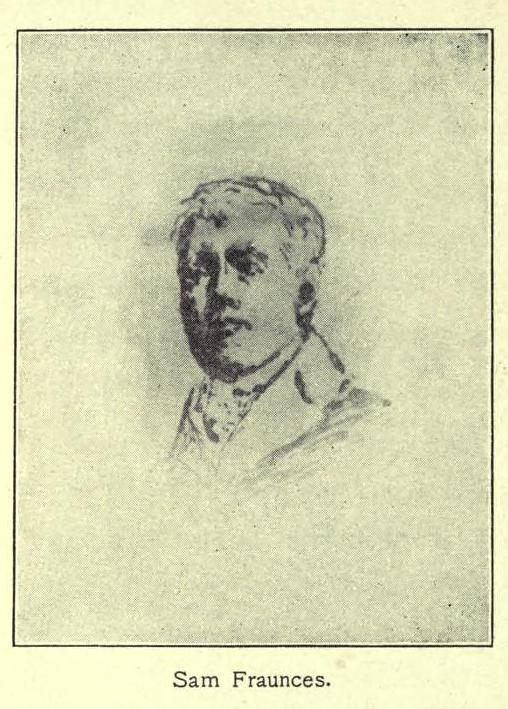 |
SAMUEL FRAUNCES |
2 |
And I could voted. Word count: 4 |
| 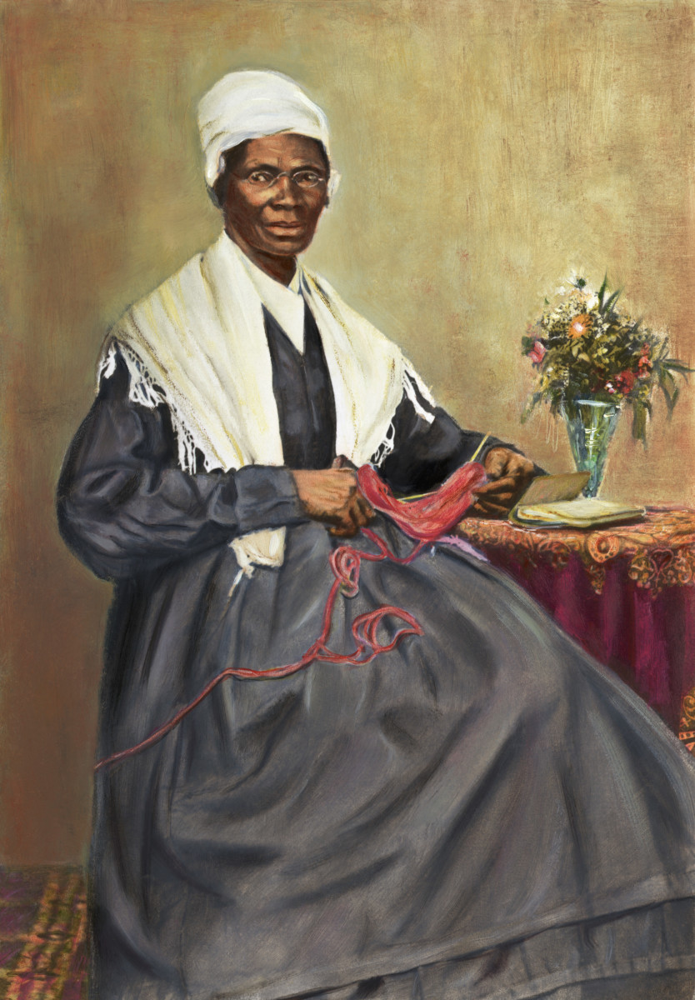 |
SOJOURNER TRUTH |
8 |
I did---until the going got hot, (SHE RISES) and the men speakers started baiting
the women, and talking about the women is weak, not strong as men nor smart as men,
and they even have to be helped into carriages. (SHE COMES TO THE ROSTRUM) Then I
just walked up on that platform, sir, and told them men: 'Nobody ever helped me into
carriages, or over mud puddles, or give me any best place. Ain't I a woman? Look at
me! Look at my arm! I have plowed and planted and gathered into barns, and no man
could head me. And ain't I a woman? I could work as much and eat as much as a man---
when I could get it---and bear the lash as well--- and ain't I a woman? I has had
five chillun and seen 'em most all sold off to slavery, and when I cried out with
a mother's grief, none but Jesus Word count: 153 |
 |
FREDERICK DOUGLASS |
2 |
I see no chance of bettering the condition of the freedman until he shall cease to
be merely a freed- man and shall become a citizen. I insist that there is no safety
for him or anybody else in America outside the American government; to guard, protect,
and maintain his liberty the freedman should have the ballot; the liberties of the
American people are dependent upon the ballot- box, the jury-box, and the cartridge-box. Word count: 74 |
| 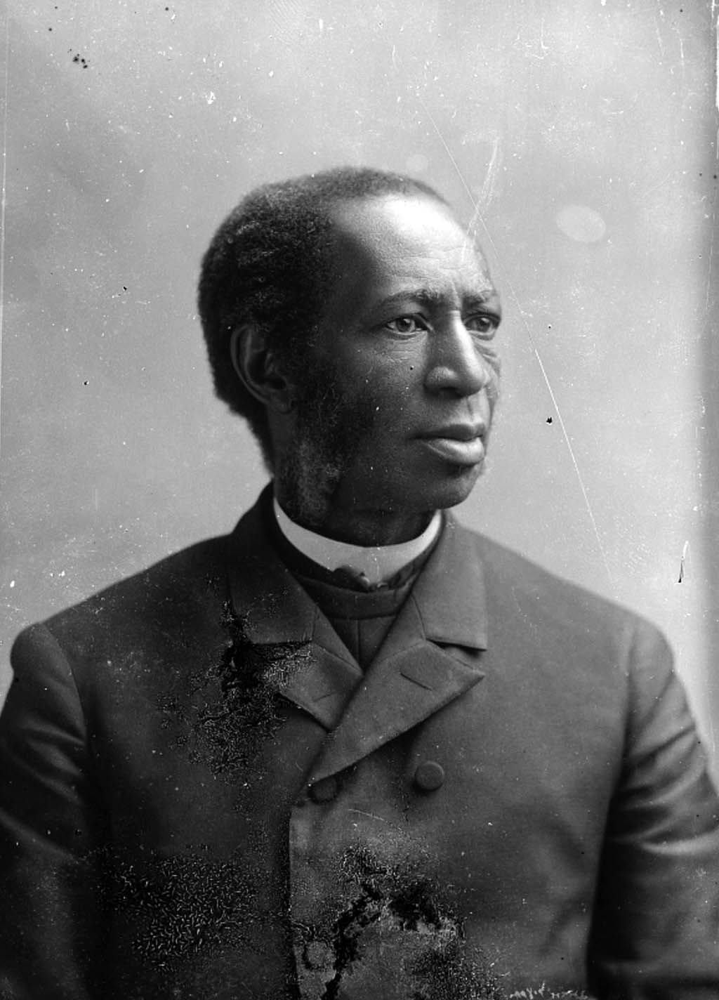 |
RICHARD H. CAIN |
2 |
I do not ask any legislation for the colored people of this country that is not applied
to white people. All that we aks is equal laws, not equal legislation, and equal rights
throughout the length and breadth of this land. We do not come here begging for our
rights. We come here clothed in the garb of American citizenship. We come demanding
our rights in the name of our children, in the name of our country. Word count: 77 |
| 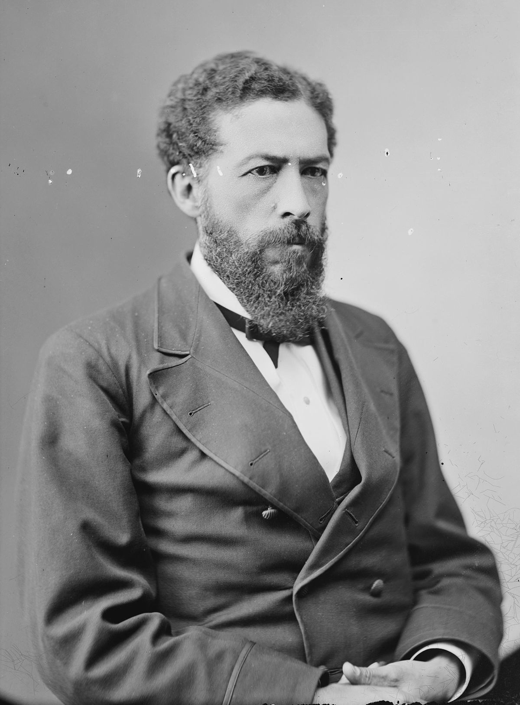 |
JOHN M. LANGSTON |
2 |
Perhaps never in the history of our cuntry was there a time when the duty of the American
voter to consider well and wisely what vote to cast, wht party to bring to power and
support in power, was so imperative. In discharging our duty in this regard, while
we are fearless, we should be impartial and just. Let us not make haste to condemn
unduly, nor to accept without wise discrimi- nation the claim of any candidate or
party. We are called upon as intelligent and earnest, patriotic and devoted citizens,
to determine, each for himself, how votes given for the Democratic or Republican party,
will tend to sustain the dignity and power of the Government, and conserve our free
institutions under the Constitution. Each of us is held responsible to his own conscience,
posterity and God for the wisdom, or folly displayed in exercising our suffrage ---
the most sacred, as it is the most valuable right which we possess on American soil. Word count: 165 |
| 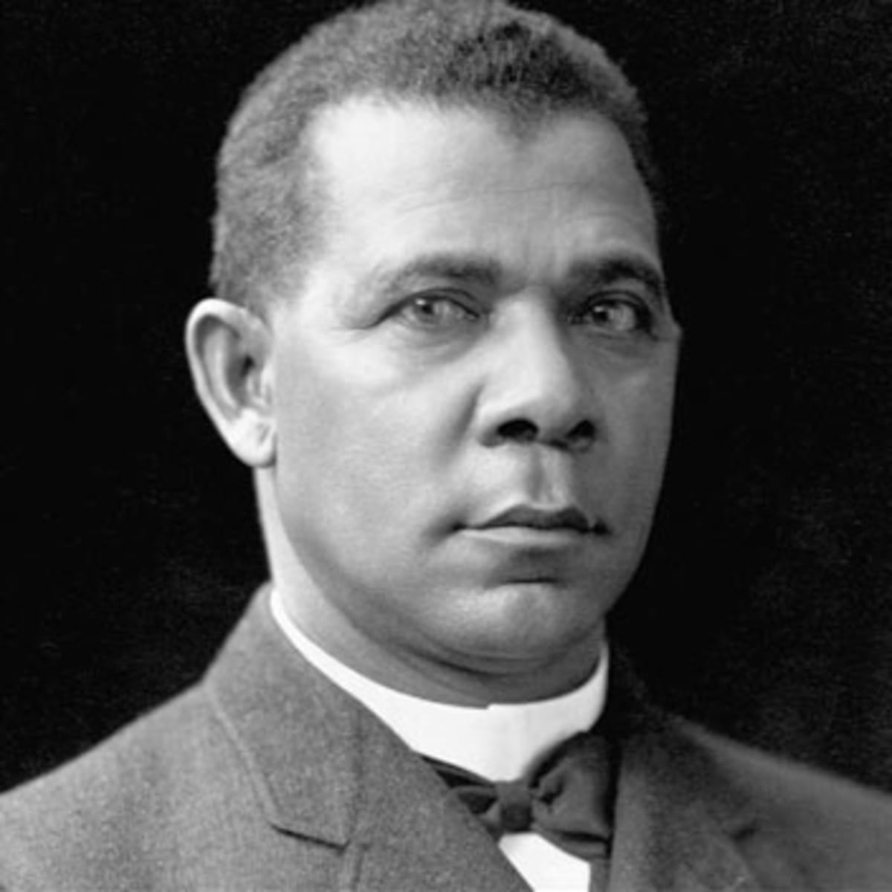 |
BOOKER T. WASHINGTON |
2 |
Friends, the individual or race that owns the property, pays the taxes, possesses
the intelligence and substantial character, is the one which is going to exercise
the greatest control in government, whether he lives in the North or whether he lives
in the South. There is no defense or security for any of us except in the highest
intelligence and development of all. Education must be digested and assimilated in
order to make it significant. The science, the art, the literature that fails to reach
down and bring the humblest up to the enjoyment of the fullest blessings of our government
is weak, no matter how costly the buildings or apparatus used, or how modern the methods
of instruction employed. The study of arithmetic that does not result in making men
conscientious in receiving and counting the ballots of their fellow men is faulty. Word count: 144 |
| Historical Character Image |
Character Name |
Number of Times Referenced by Narrator |
First Reference Context |
|
SAMUEL FRAUNCES |
2 |
Samuel Fraunces. He was the owner of Fraunces Tavern at Broad and Pearl Streets in
New York City. At his tavern George Washington often dined, and when Washington became
President, he made Samuel Fraunces his chief steward. |
| 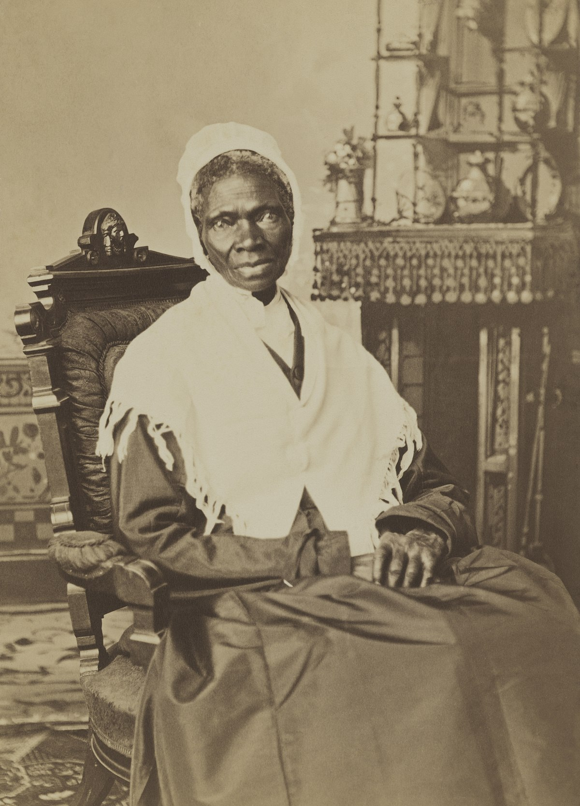 |
SOJOURNER TRUTH |
2 |
But it was almost three-quarters of a century before the country got around to giving
you the vote, Sojourner Truth, before the 19th Amendment granting women's suffrage
was passed. |
|
FREDERICK DOUGLASS |
1 |
Freedom! That was the first thing most Negroes had to get. Before the Civil War most
of us were slaves. But some Negroes, even in the South, had never been slaves. Some
were born free, some were given their freedom, and some ran away to freedom in the
North. Among the great runaways was Frederick Douglass who escaped from a Maryland |
| 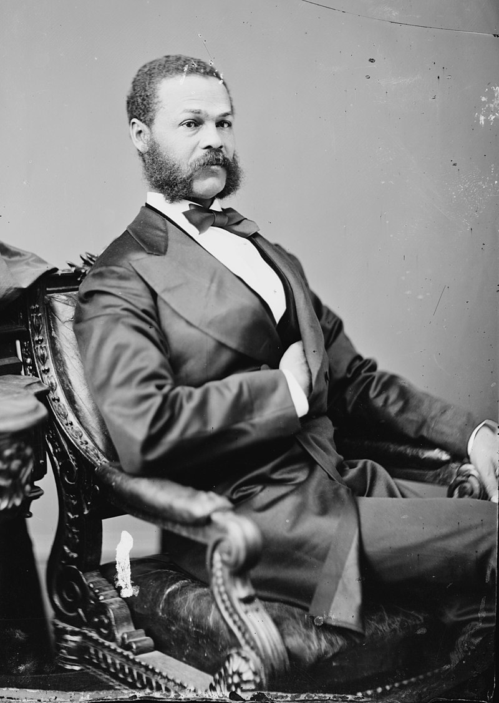 |
JEFFERSON P. LONG |
1 |
During the Reconstruction the Southern states sent 14 Negro Representatives and 2
Senators of color to Washington. The first Representative was from Georgia, elected
in 1869, Jefferson P. Long. |
| 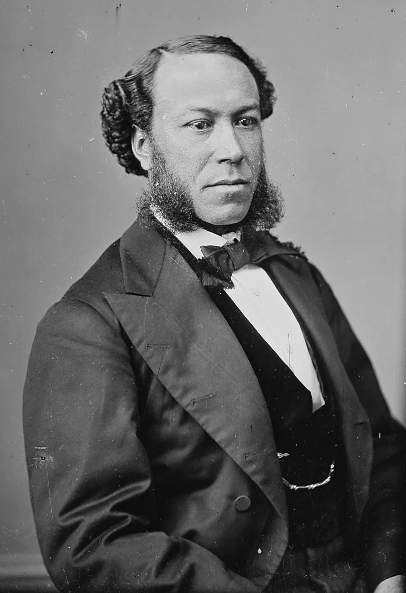 |
JOSEPH H. RAINEY |
1 |
Then in 1871 South Carolina elected four Negro Congressmen, Joseph H. Rainey. |
| 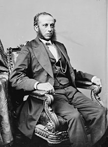 |
ROBERT O. DeLARGE |
1 |
|
| 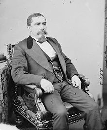 |
ALONZO J. RAINER |
1 |
|
| 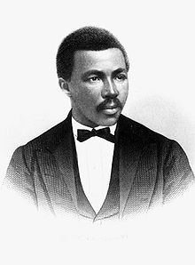 |
ROBERT B. ELLIOTT |
2 |
And Robert B. Elliott.Most of these men were as well qualified and as well educated as white officials of
the times, and some better. Some were graduates of Oberlin or other leading Northern
colleges. Elliott had studied abroad. Of those who served in Congress, |
| 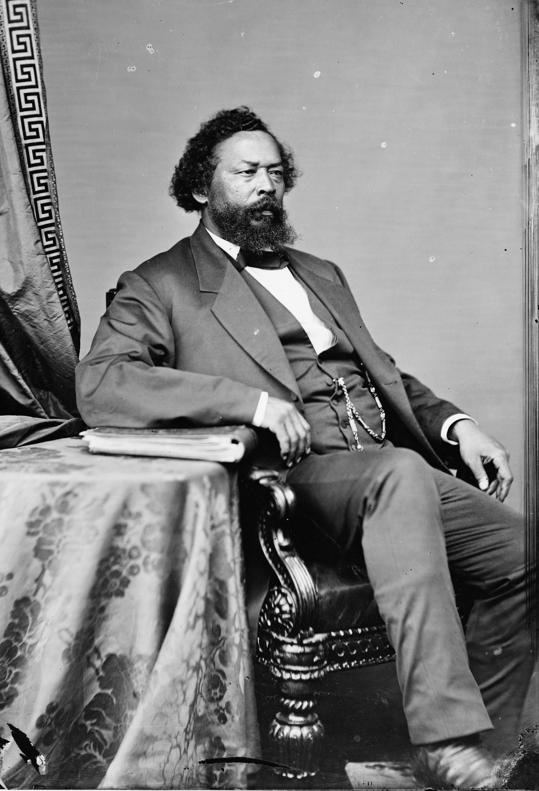 |
BENJAMIN S. TURNER |
1 |
That same year Alabama elected Benjamin S. Turner. |
 |
JOHN R. LYNCH |
1 |
In 1873 Mississippi elected John R. Lynch. |
| 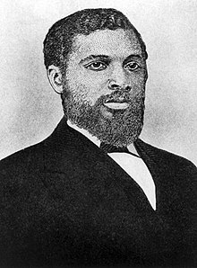 |
JAMES T. RAPIER |
1 |
Alabama elected James T Rapier. |
| 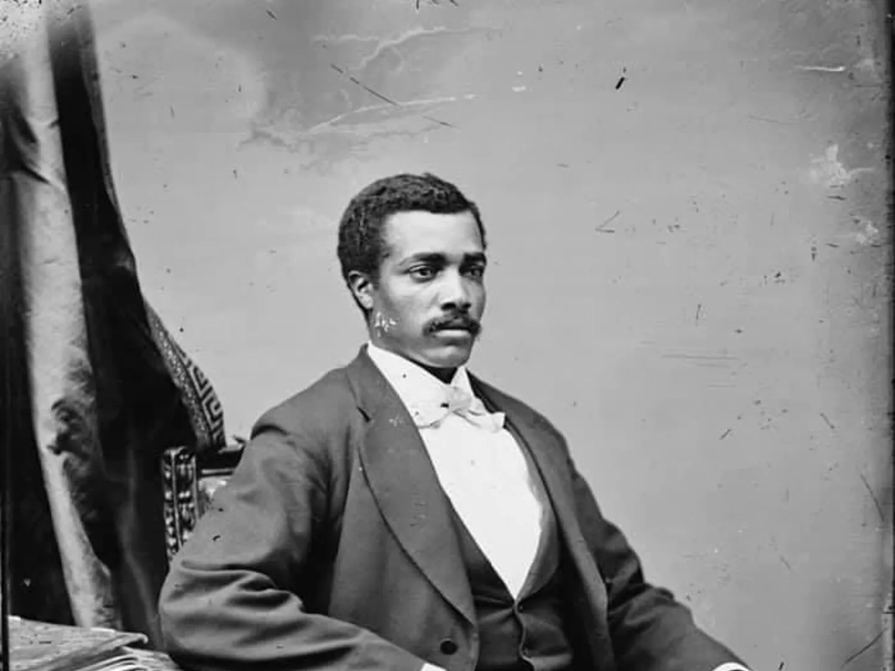 |
JOSIAH T. WALLS |
1 |
Florida elected Josiah T. Walls. |
|
RICHARD H. CAIN |
2 |
And South Carolina elected Richard H. Cain.the Republican leader, James G. Blaine, said, "They were as a rule studious, earnest,
ambitious men, whose public conduct would be honorable to any race." Typical of the
Negroes who serves in the House of Representatives at Washington was Richard H. Cain,
A.M.E. minister of South Carolina. Cain made a stirring speech in Congress regarding
Civil Rights. |
| 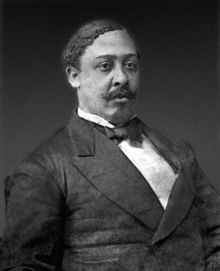 |
CHARLES E. NASH |
0 |
|
| 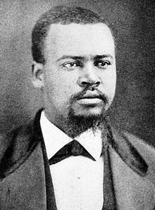 |
JOHN A. HYMAN |
1 |
That same year to the House of Representatives North Carolina elected John A. Hyman. |
| 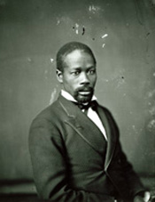 |
JENE HARALSON |
1 |
Alabama elected Jene Haralson. |
| 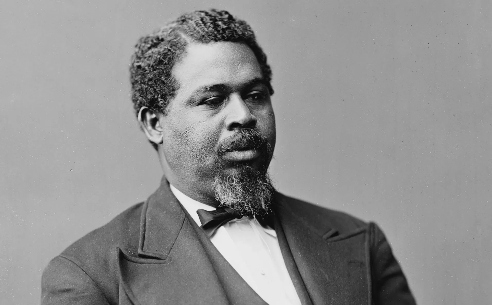 |
ROBERT SMALLS |
1 |
And South Carolina elected Robert Smalls. |
| 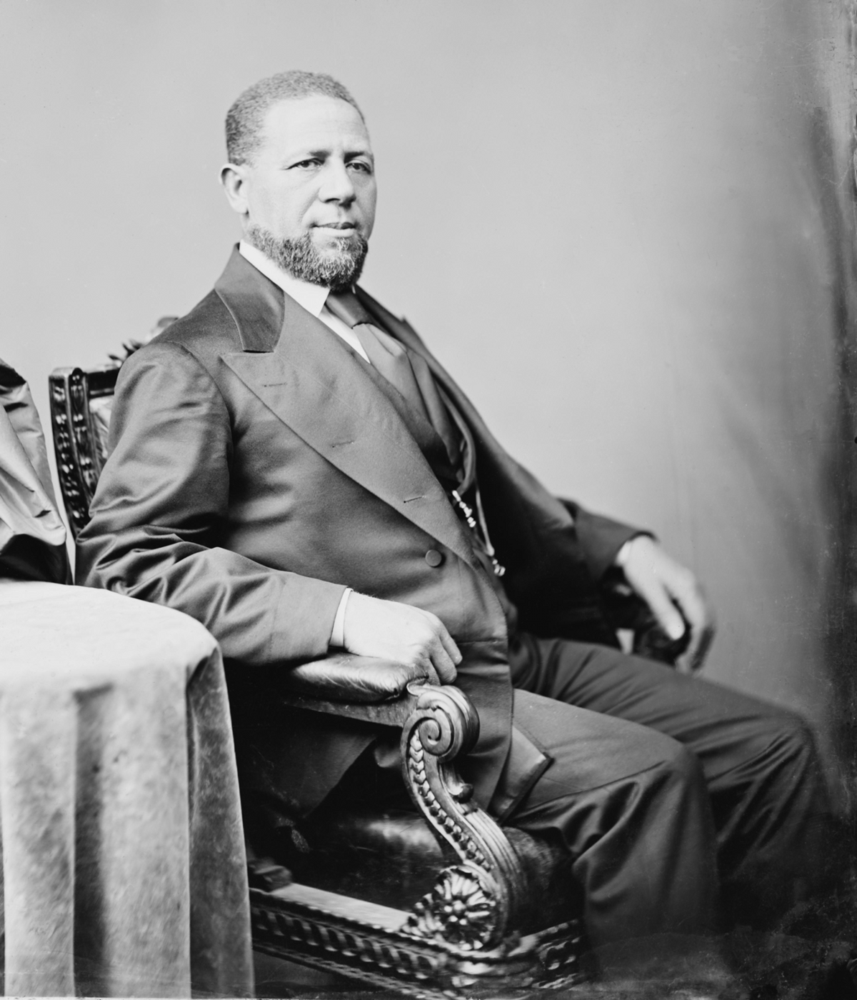 |
HIRAM R. REVELS |
1 |
The only Negro Senators in American history came at the very end of the Reconstruction
period. The first, elected in 1870, was Hiram R. Revels. |
| 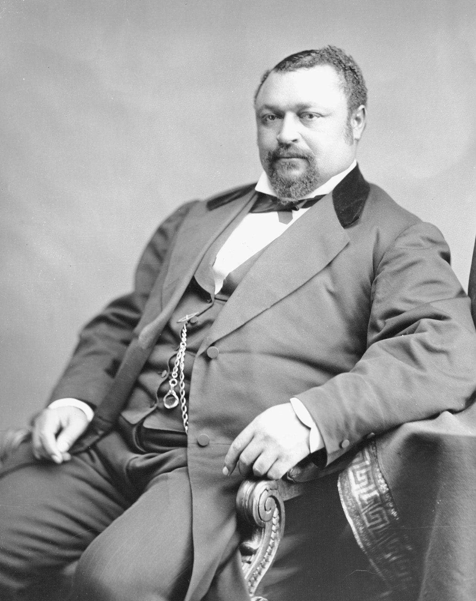 |
BLANCHE K. BRUCE |
1 |
And the second in 1876 was Blanche K. Bruce. |
|
JOHN M. LANGSTON |
4 |
from Virginia, John M. LangstonOne of the outstanding colored politicians was John M. Langston, Congressman from
Virginia, founder of the Law School at Howard Univerity, and first presidnet of Virginia
State College for Negroes. Widely known as a speaker, Langston, in an address at Saratoga,
New York, in 1876, concerning the use of the ballot, said some wise things.Disfranchised in the South by state laws, trickery, or terror, no more Negro Congressman
came from there Dixie after Langston and White. But quietly behind the scenes, a practical-minded
man of enormous political power emerged, consulted by national leaders North and South
on all problems relating to the Negro, |
| 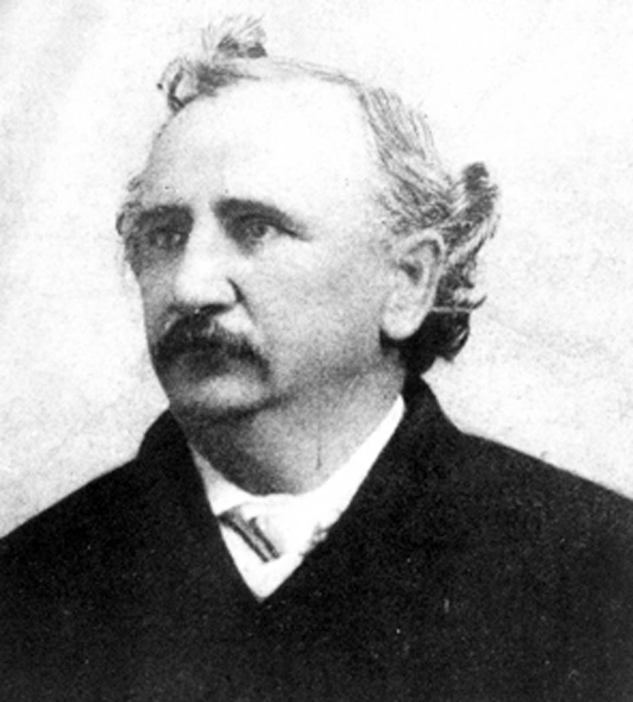 |
THOMAS E. MILLER |
1 |
from South Carolina, Thomas E. Miller and George W. Murray: |
| 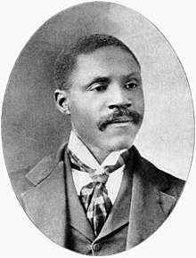 |
GEORGE W. MURRAY |
1 |
from South Carolina, Thomas E. Miller and George W. Murray: |
 |
JAMES E. O'HARA |
1 |
And from North Carolina, James E. O'Hara, Henry P. Cheatham: |
| 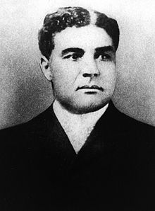 |
HENRY P. CHEATHAM |
1 |
And from North Carolina, James E. O'Hara, Henry P. Cheatham: |
| 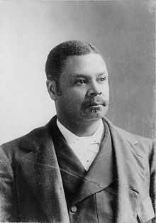 |
GEORGE H. WHITE |
3 |
And the last of the Southern Representatives, George H. White of North Carolina, elected
in 1897.When White completed his term in 1901, it was 27 years before another Negro went to
Congress.Disfranchised in the South by state laws, trickery, or terror, no more Negro Congressman
came from there Dixie after Langston and White. But quietly behind the scenes, a practical-minded
man of enormous political power emerged, consulted by national leaders North and South
on all problems relating to the Negro, |
|
BOOKER T. WASHINGTON |
1 |
He wasa friend of Presidents. That man was the great founder of Tuskegee Institute,
Book T. Washington. |